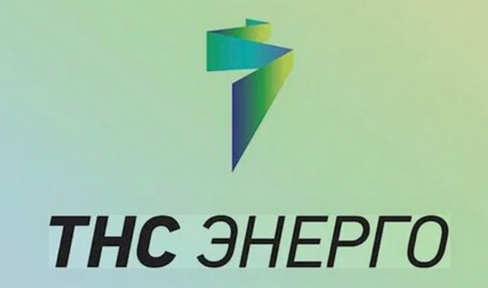

Общие сведения об организации
ПАО «ТНС энерго Ростов-на-Дону» — это гарантирующий поставщик электроэнергии на территории Ростовской области. Компания занимается куплей-продажей (сбытом) электрической энергии и является ключевым игроком на розничном энергетическом рынке региона
Основными видами деятельности ПАО «ТНС энерго Ростов‑на‑Дону» являются покупка электрической энергии на оптовом и розничном рынках и её продажа физическим и юридическим лицам на территории Ростовской области.

Ссылка на официальный сайт компании
Цель
Лидерство на региональном рынке энергоснабжения и развитие компании в интересах акционеров и потребителей
Преимущества
Надежность: компания является гарантирующим поставщиком электроэнергии в Ростовской области
Удобные сервисы: единая справочная служба, личный кабинет, мобильное приложение, электронная квитанция
Развитая сеть обслуживания: 9 межрайонных отделений и Управление компании, центры обслуживания в каждом районе области
История организации
Компания была основана в 2005 году (зарегистрирована 11 января 2005 года) и работает на рынке уже более 19 лет.
2005 год: Регистрация юридического лица — Публичное акционерное общество "ТНС энерго Ростов-на-Дону".
2017 год: Компания начала предоставлять абонентам дополнительные услуги, такие как замена и демонтаж приборов учета электроэнергии (счетчиков).
2018 год: Значительное снижение потерь в сетях (на 4.5%), что повысило эффективность работы.
Руководство и структура
Ткаченко Светлана Алексеевна
Заместитель Генерального директора ПАО ГК «ТНС энерго» — Управляющий директор ПАО «ТНС энерго Ростов-на-Дону»
Реквизиты компании
| ИНН | 6168002922 |
| КПП | 997650001 |
| Р/С | 40702810700000006181 |
| Наименование банка | ПАО КБ «Центр-инвест» г. Ростов-на-Дону |
| БИК | 046015762 |
| К/С | 30101810100000000762 |
| ОГРН | 1056164000023 |
| Место нахождения | Ростовская область, город Ростов-на-Дону |
| Адрес юридического лица | 344022, Ростовская область, г. Ростов-на-Дону, пер. Журавлева, д. 47 |
| Телефон | 8 (863) 286-86-80 |